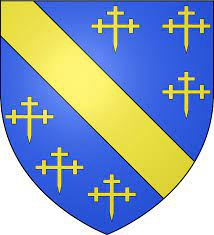

3004452 Earl Walter Bailloch Stewart of Menteith
* omkring 1230
† 1296-04-28
Greve av Menteith
Blev ca 66 år
* omkring 1230
† 1296-04-28
Greve av Menteith
Blev ca 66 år

12017732 High Steward of Scotland Walter Stewart
* 1198
† 1246 Dundonald Castle, Ayrshire, Scotland
3rd High Steward of Scotland
Blev högst 48 år
* 1198
† 1246 Dundonald Castle, Ayrshire, Scotland
3rd High Steward of Scotland
Blev högst 48 år

24035464 High Steward Alan FitzWalter
* omkring 1140 Paisley, Scotland
† 1204-08-24 Dundonald, Ayrshire, Scotland
2nd High Steward of Scotland, Tempelriddare?
Blev ca 64 år
* omkring 1140 Paisley, Scotland
† 1204-08-24 Dundonald, Ayrshire, Scotland
2nd High Steward of Scotland, Tempelriddare?
Blev ca 64 år

48070928 High Steward Walter FitzAlan
* omkring 1105 Oswestry Castle, England
† 1177 Paisley Abbey, Scotland
1st High Steward of Scotland, Baron
Blev ca 72 år
* omkring 1105 Oswestry Castle, England
† 1177 Paisley Abbey, Scotland
1st High Steward of Scotland, Baron
Blev ca 72 år
48070929 Eschina de Londres (de Motta)
* omkring 1107
† 1186 Paisley, Scotland
Blev ca 79 år
* omkring 1107
† 1186 Paisley, Scotland
Blev ca 79 år

24035465 Alesta of Mar
* omkring 1156 Mar, Aberdeenshire, Scotland
† omkring 1210 Paisley Abbey, Scotland
Blev ca 54 år
* omkring 1156 Mar, Aberdeenshire, Scotland
† omkring 1210 Paisley Abbey, Scotland
Blev ca 54 år
48070930 Earl Morggán of Mar
Greve av Mar
Greve av Mar

6008905 Beatrix of Angus
* omkring 1174 Angus, Forfarshire, Scotland
†
* omkring 1174 Angus, Forfarshire, Scotland
†
12017810 Earl GilleCrist O'Gilvie of Angus
* 1154 Forfar, Angusshire, Scotland
† efter 1206 Forfar, Angusshire, Scotland
Greve av Angus
Blev minst 52 år
* 1154 Forfar, Angusshire, Scotland
† efter 1206 Forfar, Angusshire, Scotland
Greve av Angus
Blev minst 52 år
24035620 Earl GilleBrigte of Angus
* omkring 1118 Forfar, Angusshire, Scotland
† före 1189
Greve av Angus
Blev ca 70 år
* omkring 1118 Forfar, Angusshire, Scotland
† före 1189
Greve av Angus
Blev ca 70 år
12017811 Marjorie of Huntingdon
* 1152 Caitness, Scotland
† 1213 Forfar, Angusshire, Scotland
Blev högst 61 år
* 1152 Caitness, Scotland
† 1213 Forfar, Angusshire, Scotland
Blev högst 61 år